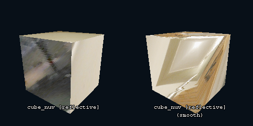
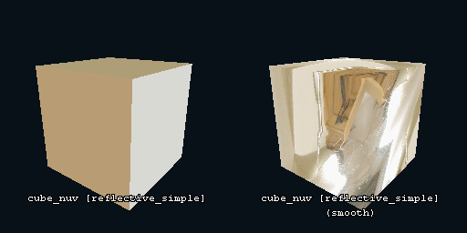
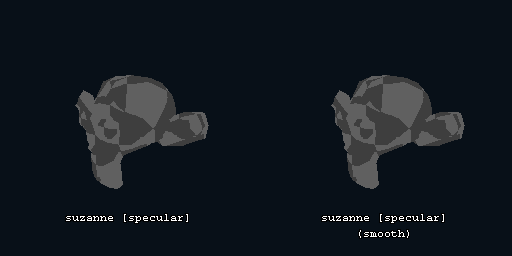
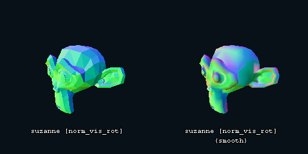
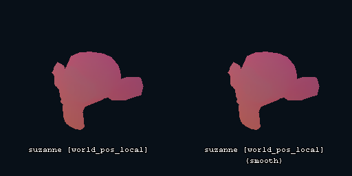

Base Shaders
This is a list of all of the built-in LK3D base shaders, with screenshots.
Most of these only work when the models are non-cached, as they need to be updated constantly.
reflective
Spheremap shader, maps a 2D sphere map onto a 3D model, used to make shiny metallic objects
This shader is really expensive! Its advised to use reflective_screen_rot if your model has smooth normals!

reflective_simple
Faster, lazier and horribly broken version of reflective
This shader is mostly phased out by reflective_screen_rot
Breaks with non-smooth normals

reflective_screen_rot
Maps a spheremap to a model using the screenspace instead
Breaks with non-smooth normals
specular
Hacky specular shader, looks horrible and runs horrible too!

norm_vis
Shows the rotated normals as the vertex colours
norm_vis_rot
Unlike what it name implies, shows the non-rotated normals as the vertex colours

norm_screenspace
Deprecated
norm_screenspace_rot
Shows screen-space normals as the vertex colours
world_pos
Shows the world position of each vertex as the vertex colours
Only works in positions between Vector(-8, -8, -8) & Vector(8, 8, 8)

world_pos_local
Shows the position local to the camera of each vertex as the vertex colours

vert_col
Sets the vertex colour of each vertex to the hue of their index
ps1
PS1-Like vertex wobble shader, effectively floors vertex positions